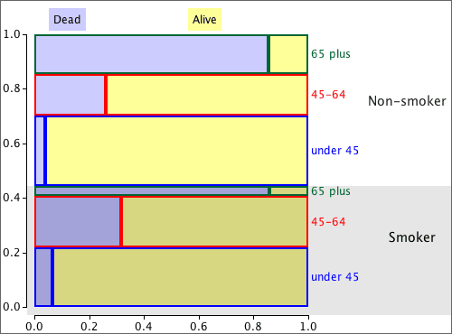
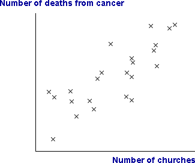

If you don't want to print now,
Relationship between two numerical variables
Scatterplots, correlation coefficients and least squares lines honestly summarise the relationship between two numerical variables, Y and X.
However they can sometimes give a misleading impression about the relationship. The problem arises when other variables are also associated with both Y and X.
The marginal and conditional relationships between Y and X are often different and may even be in a different direction.
Lurking (or hidden) variables
If the marginal relationship between X and Y is different from their conditional relationship given Z, but Z has either not been recorded or is ignored when analysing the data, then Z is called a lurking variable (or a hidden variable).
Always think about whether there might be a lurking variable, Z, that is distorting the relationship that is observed between Y and X.
Relationship between a numerical and a categorical variable
The previous page showed that the marginal relationship between two numerical variables, X and Y, can be very different from their conditional relationship for specific values of Z. The same can happen when X is a categorical variable, perhaps defining different groups.

Lurking variables and relationships between categorical variables
When the direction of the relationship reverses, the effect is called Simpson's paradox. As with other 'paradoxes', there is no real contradiction; it just takes a bit more thought to understand why your initial intuition is wrong.
Smoking and survival
In a health survey, 1,314 women were classified as smokers or non-smokers, and their survival after 20 years was recorded.
| Survival | ||||
|---|---|---|---|---|
| Smoker? | Dead | Alive | Total | P(Dead) |
| Smoker | 139 | 443 | 582 | 0.239 |
| Non-smoker | 230 | 502 | 732 | 0.314 |
A naive examination of the data suggests that smoking decreases the probability of dying, but the opposite is true if the women are split into age groups.
| Age 18-44 | |||||
| Survival | |||||
|---|---|---|---|---|---|
| Smoker? | Dead | Alive | Total | P(Dead) | |
| Smoker | 19 | 269 | 288 | 0.066 | |
| Non-smoker | 13 | 327 | 340 | 0.038 | |
| Age 45-64 | |||||
| Survival | |||||
| Smoker? | Dead | Alive | Total | P(Dead) | |
| Smoker | 78 | 167 | 245 | 0.318 | |
| Non-smoker | 52 | 147 | 199 | 0.261 | |
| Age 65+ | |||||
| Survival | |||||
| Smoker? | Dead | Alive | Total | P(Dead) | |
| Smoker | 42 | 7 | 49 | 0.857 | |
| Non-smoker | 165 | 28 | 193 | 0.855 | |
Proportional Venn diagram
Simpson's paradox is explained in the proportional Venn diagram below — in it, each rectangle is proportional to the number of women with these values for the variables.

Most of the women aged 65+ were non-smokers. This increased the overall death rate of the non-smokers.
Analysis using 'lurking' variables
Variables are only called 'lurking' variables if they are either unrecorded or are unused when analysing the data. In this section's examples, we presented two analyses of the data sets:
Although the simple analysis can result in wrong conclusions, a full analysis using the 'lurking' variable is always more complex.
Do not ignore lurking variables to simplify the analysis — you could reach the wrong conclusions from the data.
Relationship between variables
We are often interested in relationships between variables. The correlation between two numerical variables summarises their relationship; a contingency table contains information about the relationship between two categorical variables.
When the individuals can be split into groups, a categorical variable can be used to define group membership. Differences between the groups can then be expressed as a relationship between the grouping variable and other variables. The following questions are essentially asking the same in two different ways:
In some situations, the relationship between two variables, such as the relationship evident in a scatterplot, may not describe a meaningful 'real' relationship.
Relationships can be much harder to interpret than you might think
When two variables are related, we say that there is association between them.
Causal relationships
A causal relationship arises when we can conclude that one variable has a direct influence on the other.

Non-causal relationships
In non-causal relationships, the association between the two variables is not completely the result of one variable directly affecting the other.
 |
 |
If two variables are not causally related, it is impossible to tell whether changes to one variable, X, will result in changes to the other variable, Y.
The scatterplot below shows data from a sample of towns in a region. Neither variable directly affects the other. (The size of the towns is a lurking variable since larger towns have more churches and also more deaths.)

Is a relationship causal?
Investigators usually hope to find causal relationships between the variables that are recorded. If one variable causally affects the other, then adjusting the value of that variable will cause the other to change.
Causality can only be determined by reasoning about how the data were collected. The data values themselves contain no information that can help you to decide.
Lurking variables
Non-causal relationships between two variables usually result from the effect of further variables called lurking variables that are related to the variables under investigation. Causal relationships can only be deduced if it can be reasoned that lurking variables are not present.
Individuals / units
Most data sets consist of one or more values that are recorded from each of a set of individuals (or plants, plots of land, repetitions of an experiment or other 'units'). There are two different ways in which data can be collected from these units.
Types of data collection
In an observational study, we passively record (observe) values from each unit. Usually these units are sampled from some population.
In an experiment, the researcher actively changes some characteristics of the units before the data are collected. The values of some variables are therefore under the control of the experimenter. In other words, the experimenter is able to choose each individual's values for some variables.
Observational studies and experiments
The method of data collection has a major influence on whether a relationship can be interpreted as causal.
In a badly designed experiment however, lurking variables can still cause difficulties in interpreting relationships.
Population and census
We often want to find information about a particular group of individuals (people, fields, trees, bottles of beer or some other collection of items). This target group is called the population.
Collecting measurements from every item in the population is called a census. A census is rarely feasible, because of the cost and time involved.
Simple random sample
We can usually obtain sufficiently accurate information by only collecting information from a selection of units from the population — a sample. Although a sample gives less accurate information than a census, the savings in cost and time often outweigh this.
The simplest way to select a representative sample is a simple random sample. In it, each unit has the same chance of being selected and some random mechanism is used to determine whether any particular unit is included in the sample.
Sampling from a population of values
It is convenient to define the population and sample to be sets of values (rather than people or other items). This abstraction — a population of values and a corresponding sample of values — can be applied to a wide range of applications.

Variability
Sampling from a population results in sample-to-sample variability in the information that we obtain from the samples.

Sample information about the population
In practice, we only have a single sample and this provides incomplete information about the population.

Effect of sample size
Bigger samples mean more stable and reliable information about the underlying population.
Estimating means and proportions
A random sample is often used to estimate some numerical characteristic of the population, such as...
The difference between an estimate and the population value being estimated is called its sampling error.

Effect of sample size on sampling error
The larger the sample size, the smaller the sampling error. However when the population is large, sampling a small proportion of the population may still give accurate estimates.
Sampling error depends much more strongly on the sample size than on the proportion of the population that is sampled.
For example, a sample of 10 from a population of 10,000 people will estimate the proportion of males almost as accurately as a sample of size 10 from a population of 100.
The cost savings from using a sample instead of a full census can be huge.
Different sampling schemes
Two different ways to collect a random sample of n values from a finite population of size N are common. In both sampling schemes, each population value has the same chance of being in the sample.
Since a SWR may contain the same population value more than once, it covers less of the population than SWOR. SWOR therefore gives more accurate estimates of population characteristics.
Large populations and/or small samples
If the sample size, n, is much smaller than the population size, N, there is little practical difference between SWR and SWOR — there would be little chance of the same individual being picked twice in SWR.
Selecting a sample manually (raffle tickets)
This method is rarely used in research applications.
Selecting a sample with random numbers
To select a random sample without replacement using random numbers,
Random number between 0 and k
The easiest way to generate a random number between 0 and 357 is to use a spreadsheet such as Excel — it has a function designed for this purpose, "=RANDBETWEEN(0, 357)". A computer-generated random value is strictly called a pseudo-random number.
If a computer is not available, a sequence of random digits can be generated:
A random number that is equally likely to have any value between 0 and 357 can be found by repeatedly generating 3-digit numbers (between 0 and 999) until a value between 0 and 357 is obtained.
A simple random sample of individuals from a population is the easiest sampling scheme to understand, but other sampling schemes may give more accurate estimates of population characteristics.
Grouping of individuals
If the individuals in the population can be split into different groups (called strata in sampling terminology), it is often better to take a simple random sample within each separate group than to sample randomly from the whole population. This is called a stratified random sample.
The proportion sampled from the different strata are usually fixed to be the same as the proportions of individuals in the strata in the population. In a simple random sample, the proportions sampled from the strata might not match the population proportions, so a stratified random sample should be more 'representative'.

The benefits from stratified random sampling are greatest if the measurement being sampled is different in the different strata.
Groups with different variability (advanced)
In stratified random samples, random samples are usually taken from the different strata in proportion to the number of population values in the strata.
This proportionality is not however essential, and greater accuracy can be obtained by selecting larger samples from strata with greater variability. However if sample size is not proportional to stratum size, the overall sample mean is no longer appropriate for estimating the overall population mean.
If there are k strata of size N1, N2, ..., Nk,
and samples of size n1, n2, ..., nk are taken from the strata, giving means  1,
1,  2, ...,
2, ...,  k , then the population mean should be estimated by
k , then the population mean should be estimated by

Sampling frame
Before taking a simple random sample or stratified random sample, a complete list of all individuals in the target population must be available. This is called a sampling frame.
Cluster sampling
If a complete sampling frame is not available, it may be possible to group the target individuals into reasonably small groups, called clusters, for which a complete list is available.
Clusters are similar to the strata that are used for stratified sampling, but are usually much smaller. For example, a cluster might contain all of the houses in a street, or all of the individuals in a household. It is not necessary to know beforehand how many individuals are in each of the clusters.
For cluster sampling, a simple random sample of clusters is selected, with all individuals in these clusters selected.
Cost advantages
Even when a complete sampling frame is available, cluster sampling might be used to reduce the cost of sampling (or to increase the sample size for the same cost) since it is often cheaper to record information from individuals in the same cluster than from different parts of the sampling frame.
Accuracy of cluster sampling
The disadvantage of cluster sampling is that estimates are usually less accurate than the corresponding estimates from a simple random sample of the same size.
However the cost advantages would permit a larger sample size, so cluster sampling may give the best estimates for a fixed cost.
Estimation
The aim of sampling is usually to estimate one or more population values (parameters) from a sample. Because we do not have complete information about the population, the estimate is unlikely to be exactly same as the value that we are estimating, so we call the difference the error in the estimate. There are different kinds of error.
Sampling error
We have presented four different ways to sample from a population
Each of these involves randomness in the sample-selection process. The error caused by randomness in the sampling process is called sampling error.
Non-sampling error
When sampling from some types of population — especially human populations — problems often arise when conducting one of the above sampling schemes. For example, some sampled people are likely to refuse to participate in your study.
Such difficulties also result in errors and these are called non-sampling errors. Non-sampling errors can be much higher than sampling errors and are much more serious.
It is therefore important to design a survey to minimise the risk of non-sampling errors.
'Missing' responses
The first two types of non-sampling error are caused by failure to obtain information from some members of the target population.
Coverage error
Coverage error occurs when the sample is not selected from the target population, but from only part of the target population. As a result, the estimates that are obtained do not describe the whole target population — only a subgroup of it.
Non-response error
In many surveys, some selected individuals do not respond. This may be caused by ...
If non-response is related to the questions being asked, estimates from the survey are likely to be biased.
'Inaccurate' responses
The next two types of non-sampling error are caused by inaccurate information being obtained from the sampled individuals.
Instrument error
Instrument error usually results from poorly designed questions. Different wording of questions can lead to different answers being given by a respondent. The wording of the question may be such as to elicit some particular response (a leading question) or it may simply be carelessly worded so that it is misinterpreted by some respondents.
Interviewer error
Interviewer error occurs when some characteristic of the interviewer, such as age or sex, affects the way in which respondents answer questions.
There are various different ways to collect information from human populations. Each method has its advantages and disadvantages.
Telephone
Mailed questionnaire
Interviewer
Houses are rarely selected at random. Often streets are randomly selected and every 5th or 10th house in the street is approached. This is called a systematic sample.
Street corner
Some surveys are conducted by approaching people in busy shopping centres or similar public places.
To reduce coverage errors, a quota sample is often used. Each interviewer is told to interview fixed numbers of old, young, male, female, etc. respondents to match the corresponding proportion in the target population.
Self-selected
Phone-in or mail-in surveys are often conducted by radio stations and magazines. The respondents are usually so unrepresentative that the results are meaningless. These types of survey should be avoided.
Reason for conducting an experiment
An experiment looks for a causal relationship between a response and one or more explanatory variables.
Experimental units
Experiments are generally conducted on a set of experimental units. Depending on the type of experiment, these units could be people, animals, trees, areas in a field, shops in a retail chain, ...
In the experiments that we will examine here, a single response measurement is made from each experimental unit.
Factors and treatments
The researcher has control over some aspect of each unit. These controlled characteristics are explanatory variables and are called factors in the context of an experiment. The different values of the controlled characteristics are called experimental treatments.
Experimental design
The decision about which treatment is applied to each experimental unit is called the experimental design.
Differences between experimental units
In practice, it is usually impossible to conduct experiments with experimental units that are identical. The experimental units usually have characteristics that vary from unit to unit.
These differences between the experimental units result in variability in the response measurements that are made from them, even if all receive the same treatment.
Bad experimental design
If the treatments are allocated to experimental units in a way that is associated with their naturally varying characteristics, the apparent relationship between the treatments and the response can be distorted.

This is similar to the effect of lurking variables in observational studies.

Good experimental design
Since variability in the experimental units is usually unavoidable, we cannot prevent their effect on the response. However it is possible to allocate treatments to the units in a way that either eliminates, or at least reduces, the relationship between the treatment, X, and characteristics of the experimental units.

Good experimental design can avoid the potential effect of lurking variables.
Confounding
The design of an experiment may make it impossible to disentangle the effects of the treatment and other characteristics of the experimental uits. If the treatment is perfectly correlated with another variable, the effects of the two variables cannot be distinguished. The treatment and variable are then said to be confounded.
It is particularly important to avoid confounding in an experiment.
In an experiment, treatment A was applied to 10 experimental units in 2010 and treatment B was used on 10 similar units in 2011.
It is impossible to tell whether the higher mean response for treatment A than treatment B was caused by the different treatments or other differences between the two years.
Avoiding lurking variables
An important goal of experimental design is to minimise association between allocation of the treatments and characteristics of the experimental units.
If the varying characteristics of the experimental units are understood and measured before the experiment is conducted, treatments can be allocated to ensure that there is no association. (See the later page about blocking in experiments.)
Randomisation
When the differing characteristics of the experimental units are unmeasured, association between them and the treatments can be minimised by randomly allocating treatments to the experimental units. This is called randomisation of the treatments and the experimental design is called a completely randomised design.
Randomisation does not guarantee that there will be no association between the treatments and characteristics of the experimental units — by chance, there may be some association. However...
Randomisation means that is unlikely that such lurking variables will affect the conclusions.
Mechanics of randomisation
The simplest way to randomise allocation of treatments to the experimental units is:
Finding the random permutation is fairly easy in a spreadsheet such as Microsoft Excel:
This gives a random permutation of the numbers 1 to n.

Causes of variation
In a completely randomised experiment,
Distinguishing the treatment effect and random variation
To find the effect of the treatments on the response, it is essentionl that we can distinguish it from random variation.
There must be enough data to estimate random variation separately from variation caused by the treatments.
Replication involves repeat measurements for each treatment. The variation within each treatment is all random variation.
Understanding the amount of random variation is necessary before you can interpret the effect of the treatments.

Known differences between the experimental units
When nothing is known about the differences between the experimental units before the experiment is conducted, we can do no better than to randomise allocation of treatments to the units.
This design can be improved when more is known about the differences between the experimental units.
Randomised block designs
Ideally all experimental units are virtually identical (minimum random variation) but in practice they are often highly variable. A better design groups similar experimental units into blocks.
In a randomised block design, a separate experiment is conducted within each block with treatments randomly allocated to its experimental units. Although all data are analysed together, the lower random variation within each block means that differences between the treatments can be more accurately estimated.
Simple block design
Although it is not essential,
If possible, researchers usually try to define blocks that have the same size and use each treatment the same number of times within each block.
With equal replicates for all treatments in every block, each treatment mean uses the same number of values in each block, so comparisons between treatment means are not affected by differences between the blocks.
| Block 1 | Block 2 | Block 3 | Block 4 | Mean | |||||
|---|---|---|---|---|---|---|---|---|---|
| Treatment A |
|
|
|
|
2.608 | ||||
| Treatment B |
|
|
|
|
2.116 |
In the example above, the experimental units were grouped into blocks of six, with each treatment randomly allocated to three within each block. Even though the response values are much higher in Block 1, this affects both treatment means equally, so the difference between them is unaffected.
Comparison of completely randomised and randomised block designs
Grouping experimental units into blocks of similar units and using a randomised block design gives more accurate estimates of the treatment effects than a completely randomised design that ignores the blocks.
What is the purpose of the experiment?
Before conducting an experiment it is important to clearly state its objectives. In defining the goals of the experiment, it is important that people with intimate knowledge of the process or subject area are included in the team which is charged with designing and running the experiment.
Quite frequently,...
A clear statement of the problem can lead to process improvement without any experimentation, simply through creating a greater understanding of the process.
What experimental units should be used?
It is desirable for experimental units to be as similar as possible, so every attempt should be made to make the experimental units homogeneous.
Often however, the experimenter has little influence on the choice of experimental units and must contend with whatever variability exists. Grouping them into block of similar units (and using a randomised block design) will make the results more accurate.
What response variable should be recorded?
In an experiment, there is sometimes a single obvious response measurement from an experimental unit, but often there are several variables which can be considered as response measurements.
A subject expert would need to decide on which was most relevant to the aims of the experiment.
Controlled variables
Thought also needs to be given to which variables need to be controlled (the input variables) and what settings should be used for these variables in different experimental runs.
Ethical issues arise
There are a few practicalities that complicate experimentation with human subjects. For ethical reasons, experiments involving potential danger to the subjects are not possible. Even if there is no known danger, the subjects should be aware of what is involved in the experiment and must give informed consent.
Controls
Treatments that involve change should usually be compared to a 'treatment' in which there is no change. Individuals for whom there has been no change are called controls.
Placebos
Unfortunately, the act of administering a treatment to a human subject may itself affect the response, irrespective of the treatment effect. For example, if a drug is being assessed for its ability to reduce headaches, the knowledge that medication has been administered may make the subject feel better, even if the drug has no active ingredient.
To avoid the psychological effect of the treatment on the subject being confounded with the effect of the drug, an indistinguishable 'treatment' with no effect may be given to the control group of subjects; this is called a placebo.
Double-blind experiments
A further complication may arise when the measured response from each subject may be affected by knowledge of the treatment applied. If the experimenter knows which treatment has been applied to each experimental unit, there may be a subconscious tendency to systematically over- or under-assess one treatment.
In a double-blind experiment, neither the experimenter not the subject knows which treatment has been applied. Again, the aim is to ensure that other factors do not act as lurking variables to confound comparisons of the treatments.